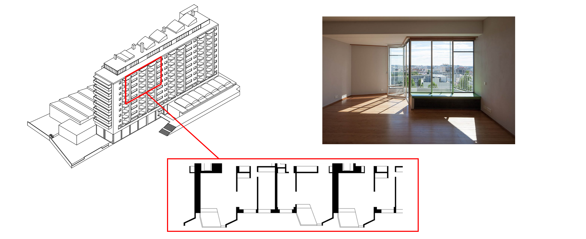
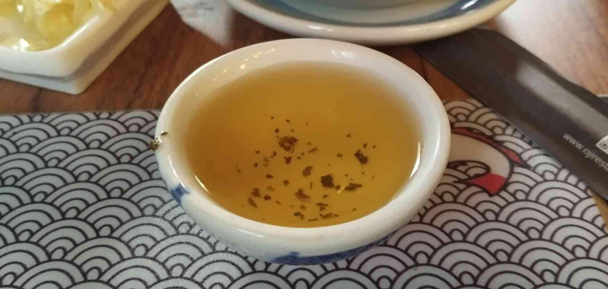

Individual Assignment: Afonso Franco
The assignment instructions for this assignment can be found here
Good Design

Nowdays, many houses are built in apartments where the best way to interact with the outside is through a balcony.
However, in most apartments, these balconies don't provide much privacy,
as one can just look to the side and watch their neighbours on their own balconies.
In Bloco das Águas Livres, located in Lisbon, they've chosen to build the apartments in a way where the balconies are sheltered
by the living room. This makes for a good design since it allows the residents to have privacy while also providing a pretty natural look.
Bad Design

Different cultures developed different manneirisms. However, that doesn't mean they are good or functionally better.
Despite being a fan of asian cuisine, I don't like to be offered tea in these japanese tea cups, and here is why:
These cups are very short, which makes them look wide, even if they can be narrower than normal cups.
Due to this, not that much tea can be put in this cup at the same time, and most of the tea that could be poured has it's surface exposed to the outside, which easily lets the tea get cold.
Tea usually has some leaf bits, which are left at the bottom of cups, sometimes not meant to be consumed. In this cup, however, you are forced to drink those as a constraint, which sometimes might not be desirable.